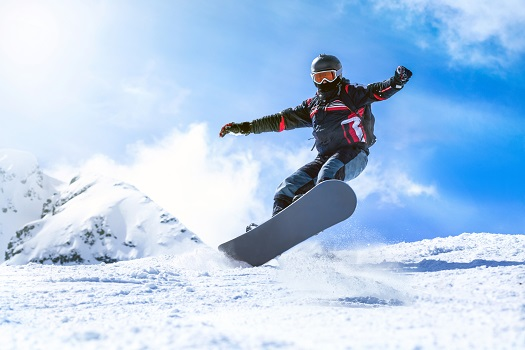

My Winter Break
Over Winter Break I kind of just messed around. However, the one cool
thing that happened was the fact that I was able to go try snowboarding for the first time. I went snowboarding with my family at Mount Rose. Throughout the lessons I was able to learn the concepts of how to snowboard such as heel and toe side turning. While I fell a lot I had so much fun learning it. Although I typically ski, as I have skied for a little over 6 years (I'm still not good though), trying snowboarding was a nice change in pace that was pretty interesting. Overall I still prefer skiing over snowboarding due to my experience and the ease in continuing one or the other. The rest of the break I spent doing homework for MUN and playing games which was not as interesting as learning how to snowboard.

Pros of Snowboarding over Skiing
-
Lighter gear
-
Easier to learn (in my opinion)
-
You are less prone to fatal injuries (in theory)
Cons of Snowboarding over Skiing
-
Often times you can't go as fast
-
Are stuck on flat ground kind of
-
Can't keep momentum for long periods of time